DSH Super Agent 原型分析
本篇介绍 DSH Super Agent 的设计思路，并结合开源代码说明核心机制。
阅读大纲
文章先从日常工作场景引出 Super Agent 的设计理念，再介绍 Source 如何接入消息、Router 如何建立任务通道，以及 Worker 如何执行、扩展和恢复。随后通过 Channel 串起人工决策、用户回复与结果交付，最后结合原文和社区反馈，讨论这套设计的价值、不足与适用边界。
背景
DeepSeek 团队公布了一个 Super Agent 原型。它能跨会话保留上下文，同时推进多项相互独立的任务。设计上，Agent 可以直接接入日常消息、日程、邮件与工作平台，由事件触发工作，让用户把注意力放在目标、关键决策和结果上。参见设计原文与开源原型。
“take as little human attention as possible, and give as much value as possible.”
当前主流的Agent以独立 Session 组织工作。用户为修复代码、整理资料等任务分别开启 Session，在不同会话中补充背景、查看进展和继续追问。多个任务并行时，用户也要持续维护各个会话之间的联系。
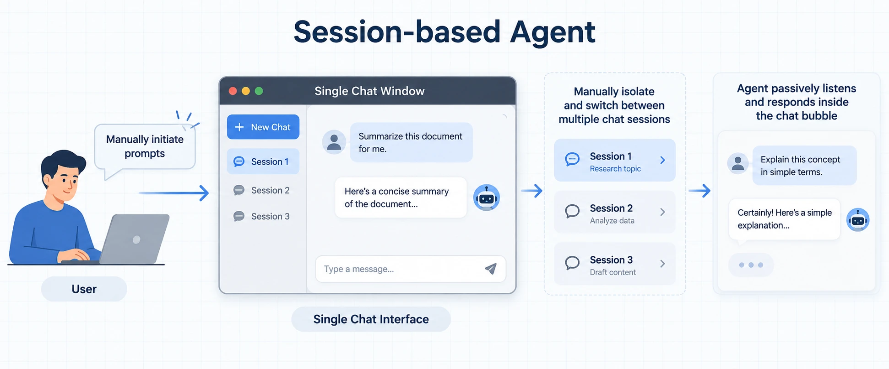
Super Agent 把这些协调工作交给系统。作为个人开发者，你可以在飞书群里分配任务、在 GitHub 中补充问题，也可以用日程触发工作。多个输入源接入同一 Router，再由多个 Worker 并行处理，结果回到相应渠道。
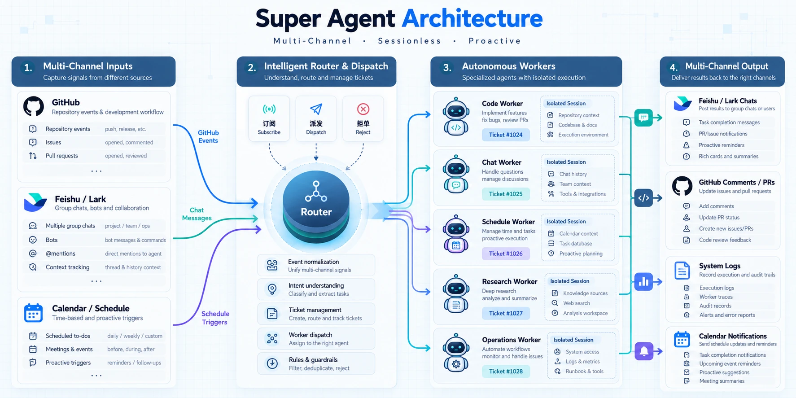
在Super Agent中抽象出四层：Source 持续接收事件，Router 判断任务归属，Worker 在各自的上下文中执行，Channel 将结果或待决策问题送回用户。用户可以跨渠道继续同一任务，无需手动选择底层 Session；系统仍保留独立会话，只把会话管理从用户操作转为内部机制。主动开展工作也始终受授权范围约束。
核心概念
我们接下来看 Super Agent 是如何抽象整个过程的。以下图为例，看看这些概念如何配合。
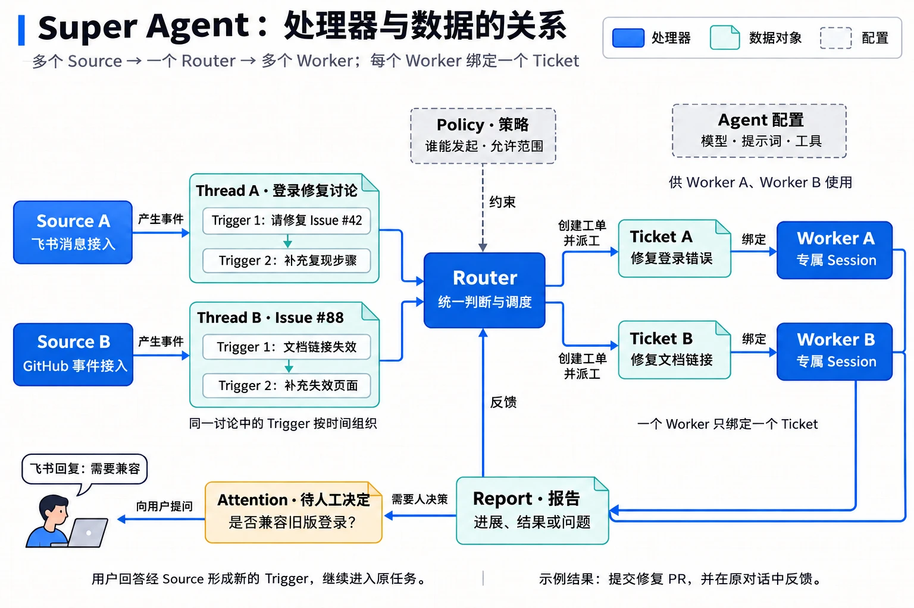
- Source（消息源处理器）接入外部事件。图中的两个 Source 分别接入飞书和 GitHub，为事件提供稳定的 Trigger ID、所属 Thread 和回复渠道。
- Trigger（触发事件）记录一条具体消息或事件，例如“请修复 Issue #42”或“补充复现步骤”。Trigger 是数据，由 Source 产生，交给系统处理。
- Thread（线程）按时间组织同一 Source 下、属于同一讨论的一组 Trigger。一个 Source 可以包含多个 Thread，例如不同的飞书话题或 GitHub Issue。
- Router（路由调度处理器）统一接收多个 Source 的输入，判断是否接单并安排执行。新任务建立 Ticket，已有任务的后续消息则交给对应 Worker。
- Policy（策略配置）为 Router 提供判断规则，规定谁可以发起工作、什么情况可以接单，以及允许处理的范围。
- Ticket（工单数据）记录一项明确且获得授权的任务，包括工作范围和执行状态。图中的两个 Ticket 分别对应登录修复和文档修复。
- Worker（执行处理器）是运行中的 Agent 实例，每个 Worker 只绑定一个 Ticket，并保留该任务的 Session 上下文。一个 Router 可以调度多个 Worker，分别处理不同任务。
- Agent（智能体）及其配置定义 Worker 的工作方式，包括模型、提示词、工具和技能。多个 Worker 可以使用相同配置，但各自处理自己的工单。
- Report（报告数据）与 Attention（待人工决定数据）记录执行反馈。Worker 用 Report 报告进展或结果；需要人作出选择时，提出 Attention，例如“是否兼容旧版登录？”用户回答经 Source 形成新的 Trigger，继续进入原任务。
Source
source定义消息来源，并且对消息来源进行统一化处理，其主要负责三个职责：接入数据源，划分线程和异常兜底。
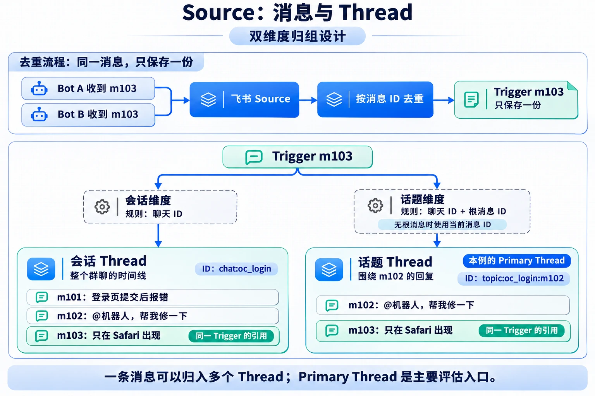
接入。Source 可以通过飞书机器人接收消息、轮询 GitHub 动态，也可以扩展定时提醒等来源。例如，同一条群消息被实时监听和历史补取读到多次，或被多个 Bot 重复上报，都应得到相同的 Trigger ID，最终只保存一份。判断依据是消息标识，而不是文字是否相同。
线程归属。一个 Source 下可以有多个 Thread，每个 Thread 按时间组织多条 Trigger。固定规则决定消息的 Primary Thread，例如按“聊天 ID + 根消息 ID”把登录修复讨论归到一起；Primary Thread 仍是 Thread，只是承担这条消息的主要归属和评估入口。额外关联则针对特定源头：例如扩展接收规则，将登录群绑定到 Issue #42，让群消息同时归入该 Issue 的 Thread，但不改变原来的 Primary Thread。这种额外归属会建立 Correlation，便于查找相关上下文，不会复制消息，也不会自动转发后续消息。
异常兜底。消息还应有可追踪的处理结果。例如，断线时由 Source 重连并补取消息；修复请求的评估超时后，由核心调度层重新排队重试。重试后仍未完成，就在管理面板提示用户介入。无需处理的消息也应记录原因，避免消息没有结果就消失。
Router
Router 负责路由 Source 传来的 Trigger，到不同的上下文中进行处理。Super Agent 用 Ticket 来抽象同一任务的上下文；为了提升响应效率，Router核心是建立Thread与Ticket的订阅关系，后续按订阅规则将trigger投递到对应的Ticket中，同时为了保证准确性，Ticket绑定的Worker会再校验每条消息是否属于当前任务，并决定如何处理。
Ticket
Ticket 是一项定义清楚、获得授权的任务。我们以下图中的“修复登录错误”为例，看看任务范围、执行上下文、消息输入和结果反馈如何组织。
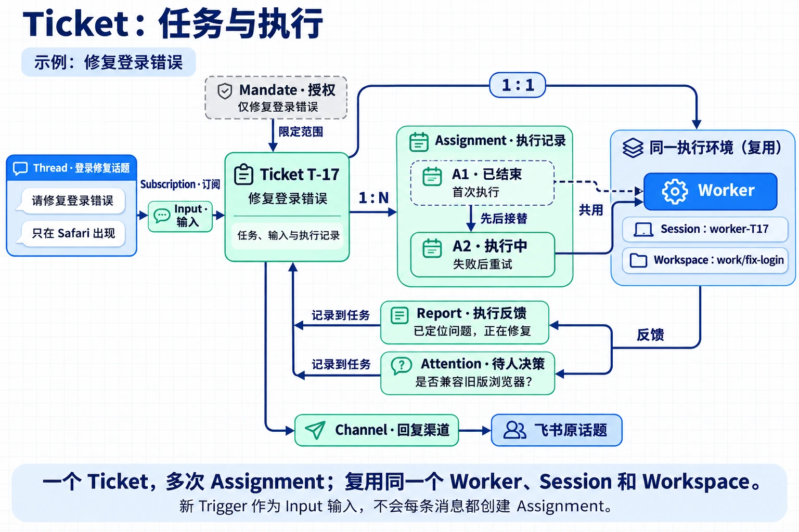
- Mandate（授权）：规定任务可以做什么。例如，允许修复登录错误，不代表可以顺带重做整个账号系统。后续消息不会自动扩大授权范围。
- Workspace（工作目录）：Worker 执行 Ticket，使用该任务固定的工作目录和独立的会话上下文，保留代码、文件和处理过程。
- Assignment（执行记录）：记录 Ticket 的一次执行，状态为待启动、执行中、已结束。一个 Ticket 可以因重试或恢复先后产生多个 Assignment，仍沿用同一任务的 Session 和 workspace。
- Input（输入）：记录送入 Ticket 的内容，包括后续 Trigger、策略变化和补充说明。例如，“只在 Safari 出现”会作为新的 Input 交给 Worker，不会因此创建新的 Assignment。
- Subscription（订阅）：连接 Ticket 与 Thread，让话题中的后续消息持续进入任务。一个 Ticket 可以订阅多个 Thread，一个 Thread 也可以被多个 Ticket 订阅。
- Report 与 Attention：Worker 用 Report 报告进展、等待、就绪、受阻、失败或无需处理，供 Router 跟进；需要人决策时，用 Attention 记录具体问题，例如“是否需要兼容旧版浏览器？”
- Channel（回复渠道）：记录任务可以向哪里回复，例如发起请求的飞书话题。一个 Ticket 可以有多个回复渠道。
生命周期
我们继续用下图看看这个任务如何从创建走到结束，并在收到后续消息时恢复。Ticket 本身只有未结束（open）和已结束（ended）两种状态；排队、执行、等待或受阻，是根据 Assignment、Report 和待处理输入判断出的工作阶段。
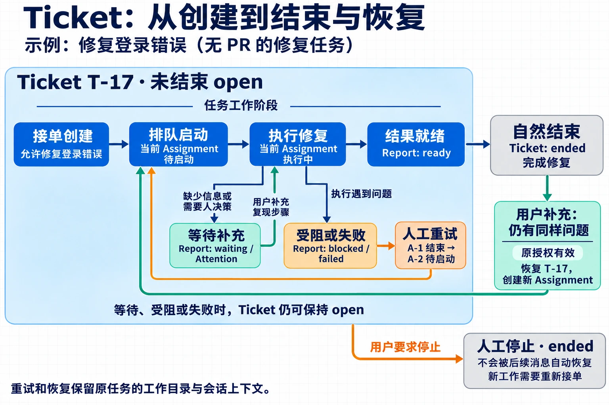
- 创建：Router 接单后创建 Ticket，记录授权范围、来源消息和回复渠道，建立相关 Thread 的订阅，并创建第一个待启动的 Assignment。
- 执行：Worker 启动后，Assignment 进入执行中。Worker 在任务的工作目录和会话上下文中处理输入，并通过 Report 反馈进展。后续消息可以继续进入同一任务。
- 等待与重试：缺少新消息时等待 Trigger，需要人决策时提出 Attention。受阻或失败时，Ticket 通常仍未结束，等待人工补充信息或重试。重试会结束旧 Assignment、创建新 Assignment，并复用原有会话和工作目录。
- 结束：没有待完成的关联交付时，Worker 报告结果就绪，Ticket 可以结束；判断无需继续处理时，也可以结束。若任务关联了代码合并请求（PR），结果就绪后还需等待相关 PR 合并或关闭，并确认没有未完成工作。用户主动停止也会结束 Ticket。
- 恢复：自然结束的 Ticket 保留订阅。用户在任务所属 Thread 中继续发消息时，只要原授权仍有效，就可以恢复同一 Ticket，并创建新的 Assignment；机器人消息不会自动恢复任务。被用户主动停止的 Ticket 不会这样恢复，新的工作需要重新接单。
例如，登录修复完成后，用户补充“另一个浏览器仍有同样的问题”，任务可以在原授权范围内继续；如果用户改为要求新增登录方式，Worker 应将请求退回 Router，重新判断任务归属和授权。
路由
分工包含两层判断：Router 模型决定新请求进入哪个 Ticket，Engine 校验后建立 Thread 与 Ticket 的订阅；后续消息按订阅直接投递，由 Worker 再判断是否在任务范围内。订阅决定消息送到哪里，不代表消息一定需要执行。我们以下图为例。
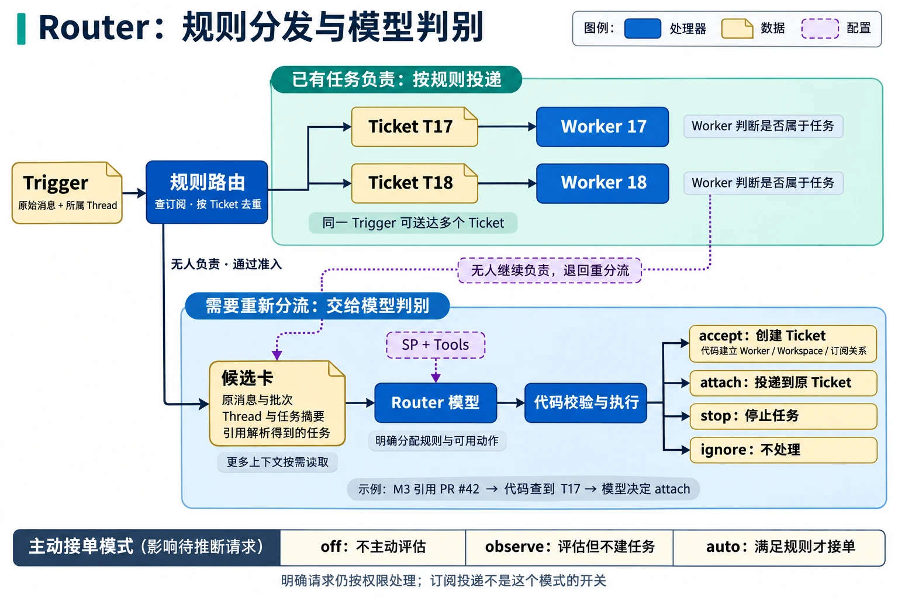
一个 Thread 可以向多个 Ticket 投递，每个 Worker 独立判断：任务内的消息继续处理，无关消息无需动作，超出范围的请求退回 Router。人类追问只要仍有 Worker 负责，Router 就不会重复分配；用户要求停止时例外。
提示词与工具
我们先看 Router 的系统提示词的大致内容。
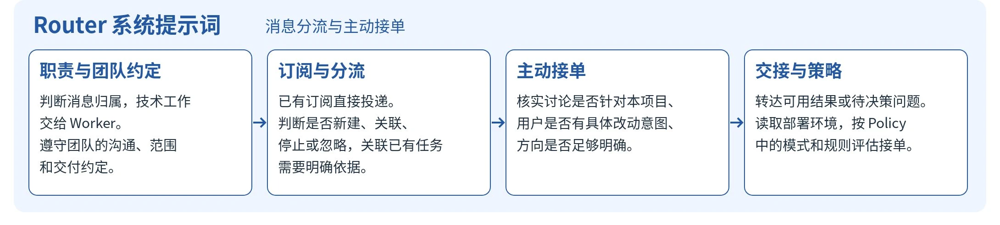
Router的提示词明确说明了系统整体的分工，重点说明了订阅与分流的规则，并且针对不同的接单策略定义了不同的工单创建策略。此外Router还携带了下列工具，用于感受环境数据，完善整个决策链路。下表省略 orchestrator_ 前缀，例如 eval_decide 的完整名称是 orchestrator_eval_decide。
| 工具 | 模型用它做什么 |
|---|---|
read | 查询消息、Thread、Ticket、Report 和配置。 |
route | 提交 accept、attach、stop 或 ignore，处理明确请求；也可直接忽略明显无关的待推断候选。 |
eval | 加载待推断候选的讨论窗口和相关任务，供当前模型判断。 |
eval_read | 继续读取该评估需要的原消息、更多讨论、图片或相关文件。 |
eval_decide | 提交主动评估结论、逐条规则判断和实施依据，由代码校验；不是另调用一个评估模型。 |
reply | 向用户转交结果、回答或需要人决策的问题。 |
此外还有任务状态查询、重试、补充事实、重新送评、取消订阅和配置维护工具，以及受限的技能、文件和命令工具。它们服务于路由与管理；具体实现仍交给 Worker。
上下文组织
我们先看 Router 如何组织上下文。飞书、GitHub 的候选消息、订阅投递通知，以及多个 Worker 的关键反馈，都进入同一个主 Session；Router 的工具调用、返回和部分状态变化也会追加。每次模型请求带上当前 SP、工具定义和保留的历史，用 Thread、Trigger、Ticket 标识区分来源与任务。下图展示历史如何累积，以及压缩后如何继续使用。
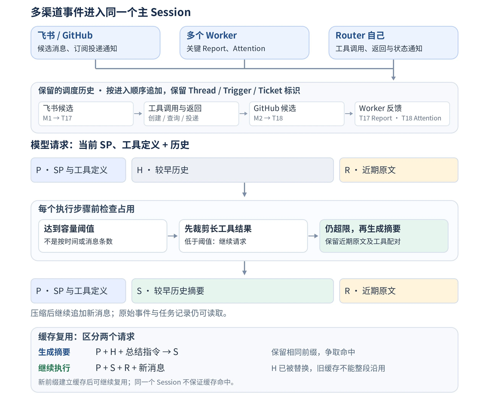
主 Session 保留的是调度过程，不会合并 Worker 的完整对话。普通进度 Report 若未回答用户问题，不会转发；Report 摘要超过 600 字符会截断，并附上完整结果的读取入口。
历史变长后，DSH 按上下文容量触发压缩。每个执行步骤开始前，系统检查占用，不按消息条数或固定时间压缩。当前依赖版本的默认阈值如下，实际值随模型窗口、输出预留和配置变化：
压缩阈值 = min(上下文窗口 × 80%,
上下文窗口 − 预留输出 tokens − 65,536)达到阈值后，先裁剪超过 8,192 字符的工具结果，保留前 4,096 和后 1,024 字符。若仍超限，再将较早历史合成摘要，保留近期原文；默认近期保留预算为“上下文窗口减去预留输出”后的 16%，并避免拆开工具调用与返回。模型实际报上下文超限时会强制压缩恢复，也支持手动压缩，这两种路径不套用常规近期保留比例。
压缩改变的是后续发送给模型的历史视图，原始事件和任务记录仍保留。Router 因而可以同时看到“较早调度的摘要”和“近期消息原文”，需要任务详情时再通过 read 查询。
缓存复用分为图中的两个阶段。生成摘要时，DSH 默认沿用此前的模型、SP 和工具定义，在待压缩历史后追加总结指令，争取复用相同前缀。摘要 S 替换历史 H 后，原来的前缀发生变化；即使近期原文 R 没变，也不能单独沿用它在旧前缀下的缓存。新前缀建立缓存后，后续追加消息才能再次受益。
裁剪工具结果、修改 SP 或工具定义、切换模型，都可能缩短可复用的前缀。同一个 Session 不保证缓存命中，实际情况应查看 prompt_cache_hit_tokens 和 prompt_cache_miss_tokens。
工具调用
接着看 Router 如何使用这些上下文完成投递。话题 A 中，用户先请求修复 CSV 导出，再补充复现条件；评估启动前入队的消息可组成一个批次。Router 接单创建 T17，代码启动 Worker 并建立订阅；Worker 随后提交并绑定 PR #42。用户在未被订阅的话题 B 发来 M3“PR #42 仍有问题，请继续修复”，代码通过 PR Thread 的订阅关系找到 T17，将任务摘要加入候选卡。我们以下图为例。
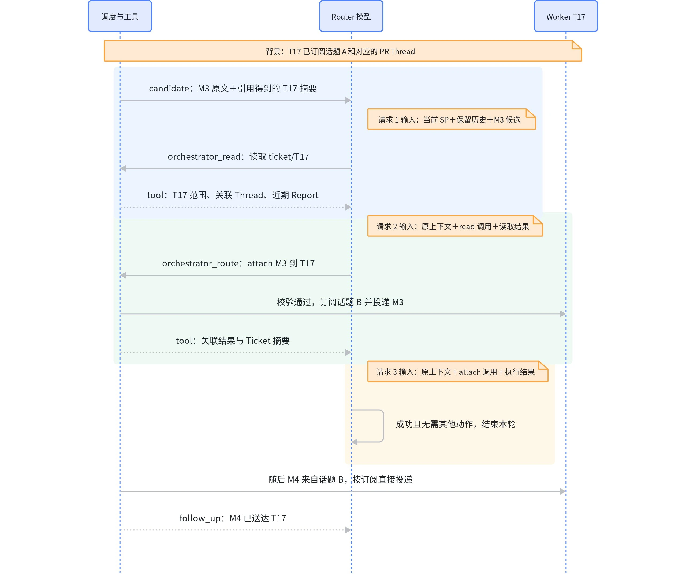
M3 进入主 Session 后，模型先用 orchestrator_read 补读 T17，再用 orchestrator_route 关联消息。每次工具调用和返回都会追加到历史，供下一次请求使用；任务信息已经足够时，可以跳过补读。下面只保留关键调用：
user：M3 原文、话题 B、引用得到的 T17 摘要
assistant → orchestrator_read：{"resource":"ticket/T17"}
tool → 返回 T17 的任务范围、关联 Thread 和近期 Report
assistant → orchestrator_route：
{"decisions":[{"kind":"attach","trigger_id":"M3","ticket_id":"T17"}]}
tool → 返回关联结果和 Ticket 摘要；模型确认成功后结束本轮关联成功后，代码将 M3 投递给原 Worker，并让 T17 订阅话题 B。随后 B 中的 M4“补充复现附件”直接按订阅投递，Router 收到 follow_up，不再重复关联。对于待推断请求，模型则使用 eval、按需 eval_read 和 eval_decide，相关调用和返回也按同样方式追加。
接单模式
我们先区分 explicit 和 inferred，再看接单模式如何生效。两者由代码根据来源、发送者、是否定向请求和准入配置判定，模型不能自行更改请求类型。
- explicit（明确请求）：按准入规则认定为明确交办，例如名单内用户 @机器人分配任务。Router 按权限和分配规则处理。
- inferred（待推断请求）：需要结合讨论判断是否应接单。讨论可以已经很明确，但尚未按准入规则认定为明确交办。
判断讨论中是否有可接的工作，叫“主动评估”；评估通过后创建 Ticket，叫“主动接单”。两条路径都由代码创建 Ticket。我们以下图为例，看同一项文案修改如何处理。
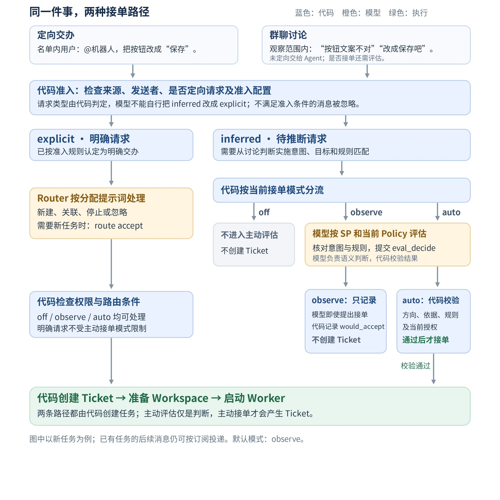
提示词指导模型判断。每次请求的 SP 都带上当前模式和启用规则。explicit 走分配工具 route；inferred 由模型结合上下文检查实施意图、目标和规则，通过 eval_decide 提交判断与依据。语义是否匹配仍依靠模型，代码只校验提交结果和执行条件。
代码控制是否接单。off 不让待推断请求进入主动评估；observe 允许评估，但即使模型提出接单，也只记录 would_accept，不创建 Ticket；auto 才允许在方向、依据、规则和授权检查通过后创建。引擎还会再次检查，模型误用 route accept 也不能绕过限制。默认模式为 observe。
模式变化后，代码更新 Policy 版本，并让进行中的评估重新判断。从 auto 切换出去，还会通知相关 Worker 只收尾当前工作或报告放弃；收尾由 Worker 理解通知执行，恢复已结束任务则由代码重新校验授权。模式不是系统暂停开关：明确请求仍可处理，已有任务的订阅投递也不因此全部停止。
Worker
Router 把消息分配给 Ticket 后，由 Worker 完成具体工作。每个 Ticket 保留一个逻辑 Worker、独立 Session 和固定工作目录；后续消息、重试和新的 Assignment 继续使用这份上下文。我们先看 Worker 收到什么，再看执行过程如何运行和扩展。
提示词与工具
我们先看 Worker 如何根据系统提示词判断任务范围、执行工作并报告结果。
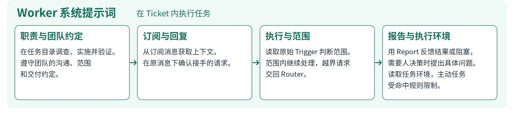
Worker 的系统提示词（SP）第一段同样是明确团队职责，告知Worker和Router的配合方式。然后告知Worker可以通过订阅去获取上下文，以及将越界请求退回 Router。与Router不一样的是，Worker后面明确了自己的执行范围、权限和工作方式。要求 Worker 阅读上下文、判断任务范围、选择方案并完成实施和验证，最后通过 Report 反馈。任务内的追问继续处理，超出范围的请求交回 Router，需要人决策时提出具体问题。主动接单的任务会额外加入范围限制，并随任务说明传入匹配的规则；用于全局主动评估的 Policy 则只提供给 Router。Worker 通过以下工具执行这些要求。工具分为工作工具和任务工具。前者用于读写文件、搜索、运行命令、后台作业、技能和子 Agent；后者把动作绑定到当前 Ticket。下表统一省略 orchestrator_ 前缀。
| 任务工具 | 用途 |
|---|---|
read | 补读当前任务、相关消息、Thread 和 Report。 |
ack | 确认已接下当前任务内的一条人类请求。 |
thread_follow | 关注相关 Thread，仅作为上下文。 |
thread_unrelated | 取消误关联 Thread；不能随意移除任务自身的 Thread。 |
trigger_handback | 将超范围或属于其他任务的消息交回 Router。 |
report | 反馈 progress、ready、blocked、failed 或 dropped；human_action 字段用于提出待人决策的问题。 |
Worker 的任务工具由代码绑定 Ticket ID，读取范围也受检查。需要人决策时，通过 report 的 human_action 交给 Router 转达；预设不提供直接提问的交互工具。普通进度留在任务内；明确回答用户问题的进度、关键结果和待决策问题会向 Router 反馈。
Worker 配置方面，原文提供统一的默认模型配置 executor.model，也支持覆盖 Worker 提示词和添加技能；模型配置用于初始化新 Session，提示词在后续请求中读取最新版本。但原文和代码没有提供按 Ticket 选择不同 Worker 身份的机制，也没有 Router 指定角色的参数。因此，专门负责编码或方案设计的 Worker 可以作为扩展方向；各自的模型、提示词、技能和工具权限如何配置，以及如何绑定 Ticket，原型尚未定义。参见执行器配置与路由参数。
上下文
Worker 使用自己的任务历史，不复制 Router 的完整 Session。首次消息包含 Ticket 标题、任务说明、原始 Trigger 和同批消息摘要；后续 Trigger、Policy 变化和恢复提示继续追加。原始讨论按需读取，不能用 Router 的标题或路由备注代替。
内联任务说明最多 1,500 字符，Trigger 正文最多 600 字符；超出部分带读取入口。工具调用和返回持续进入历史，较早历史使用与 Router 相同的 DSH 压缩机制。重试或恢复仍使用 worker-<ticket id> Session；历史尚在时，新 Assignment 只补充新增信息。
这些输入由当前 Assignment 承接。Assignment 是 Ticket 的一次执行记录，不是单条消息或一次模型调用。Engine 创建 Ticket 时同时创建第一个 Assignment，状态为 pending（待启动）；Executor 启动并回报后，状态变为 running（执行中）。后续 Trigger 作为 Input 投递到当前 Assignment，普通追问和异步子任务都不会新建 Assignment。
上下文也会接收异步任务的结果。按照原文的异步执行思路，Worker 启动子 Agent 后，先收到启动确认，无需等待最终结果，可以继续处理其他工作；新消息在当前推理步结束后进入下一步上下文。子任务完成后，结果作为新事件进入原 Worker 的 Session；正常执行期间，若 Worker 已结束当前轮次，该事件会唤醒会话继续处理。原型也将 Worker 中运行超过 5 秒的 Shell 命令转为后台作业，以免长命令阻塞消息接收。参见设计原文第 4.1 节（转载）和原型的后台任务机制。
Assignment 的状态只有 pending、running、ended。模型结束一轮、等待新消息，或 Report 为 blocked、failed，都不直接等于 Assignment 结束。任务结束时，Engine 将当前 Assignment 标记为 ended，并让 Executor 清理后台任务；显式重试或中断后需要重新启动执行时，则结束旧 Assignment、创建新 Assignment。已结束的 Ticket 符合条件恢复时，也创建新 Assignment，继续使用原 Session 和 workspace；旧记录不会重新变为 running。参见Assignment 的创建、重试与结束。
我们以 T17 修复 CSV 导出为例：A1 启动后，Worker 让子 Agent 在后台复现，自己继续分析；用户补充“仅中文表头失败”时，消息仍交给 A1。若执行受阻后用户要求重试，Engine 结束 A1、创建 A2，Worker 沿用原上下文继续处理。最终交付满足结束条件时，T17 与当前 Assignment 一起结束。
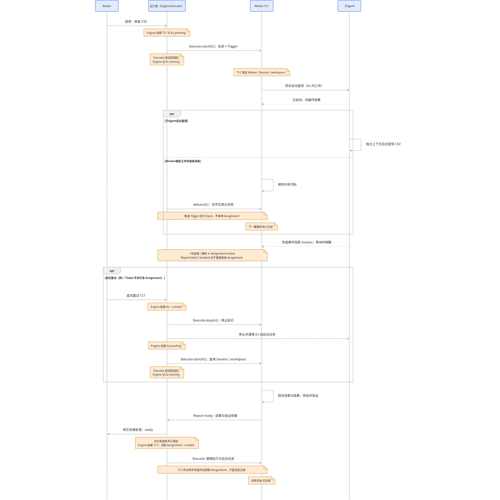
执行与扩展
Executor 是任务调度与 Agent 执行框架之间的适配边界。调度核心 Engine 通过统一接口启动执行、投递消息和停止工作，具体的 Executor 实现将这些操作转换为后端调用，并回传执行状态与结果。DSH、Codex、Claude Code 等框架都可以作为适配目标，各自负责模型与工具的 Agent Loop；接入时需要实现相同的执行约定。
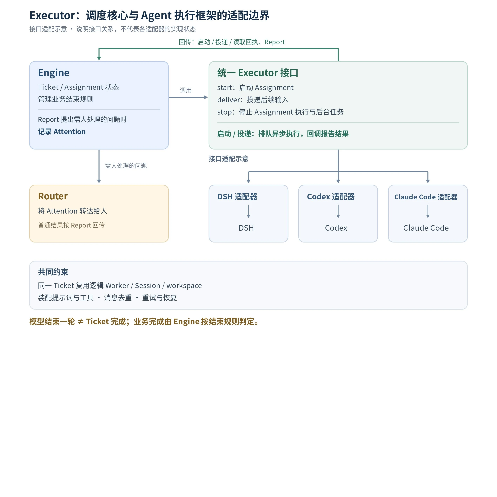
适配围绕三个接口展开：start 为待执行的 Assignment 安排启动，创建或复用所属 Ticket 的 Worker Session 和 workspace，装配任务说明、提示词及工具；deliver 将后续输入投递到对应 Session，分别回报投递成功、失败和实际读取状态；stop 在 Engine 结束相应 Ticket 或 Assignment 后，停止当前执行并清理关联的后台任务。启动和投递采用排队执行、回调报告的方式，不阻塞调度。适配器还需维护 Ticket 与 Session、workspace 的对应关系，配合完成消息去重、重试和中断恢复，让同一任务继续原有工作。
反馈也需要统一：Worker 通过 Report 报告进度、结果和待人决策的问题，Executor 回报运行状态及异常；Engine 据此更新任务状态，并将待决策问题记录为 Attention，由 Router 转达。模型结束一轮输出不等于任务完成，适配器需要区分后台仍在执行、暂时空闲和执行失败等情况，Ticket 是否结束则由 Engine 按规则判断。这样，更换执行框架时，调度逻辑和任务连续性仍能保持一致。
云端与执行环境
执行框架可以替换，执行环境也可以按任务选择。按照原文的设计，Super Agent 的 Agent Loop 在云端运行，Session 和任务状态由独立存储保存，再按需连接个人电脑、云端临时环境和常驻开发机。执行端通过轻量进程运行命令、返回结果，代码、依赖和本地配置继续留在原有环境中。参见设计原文第 5 节（转载）。
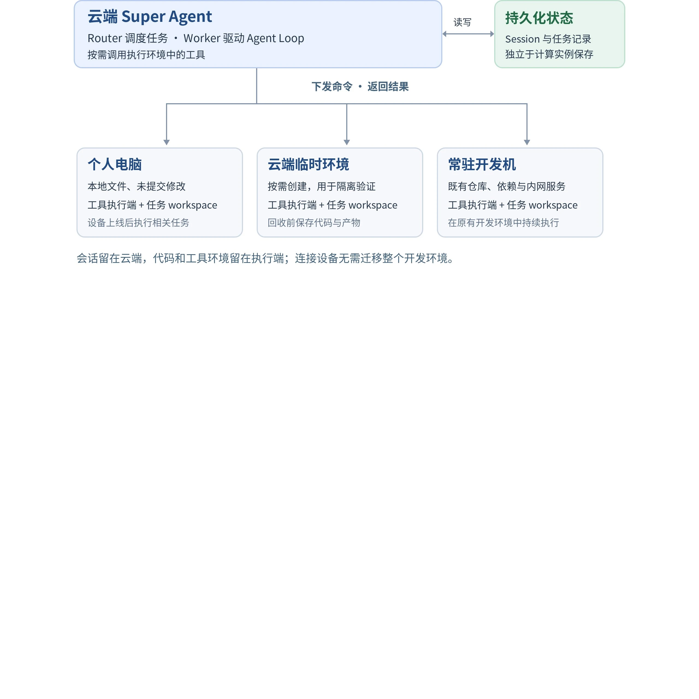
个人电脑适合处理本地文件和未提交的修改；云端临时环境适合按需创建、完成后回收的隔离任务；常驻开发机适合依赖既有仓库、工具链和内网服务的持续开发。个人电脑离线时，云端 Agent 仍可接收消息和处理其他任务，依赖这台电脑的操作等待设备重新上线。
Worker 的 Session 保存在云端，workspace 则位于所选执行环境中。同一 Ticket 持续关联这份工作目录，后续消息和重试沿用已有代码进度。例如，Worker 可以连接常驻开发机，在该机上通过 git worktree 从目标仓库创建任务目录，再完成修改、测试和提交；不需要先把整套开发环境搬到云端。使用临时环境时，需在回收前保存代码与产物，保证任务后续仍可继续。
持续运行与恢复
Worker 持续运行，需要控制并发，也要保留中断后可继续的状态。并发上限限制的是正在执行的 Worker，不是 Ticket 总数；等待用户的任务可以释放名额，让其他任务继续。我们以下图为例。
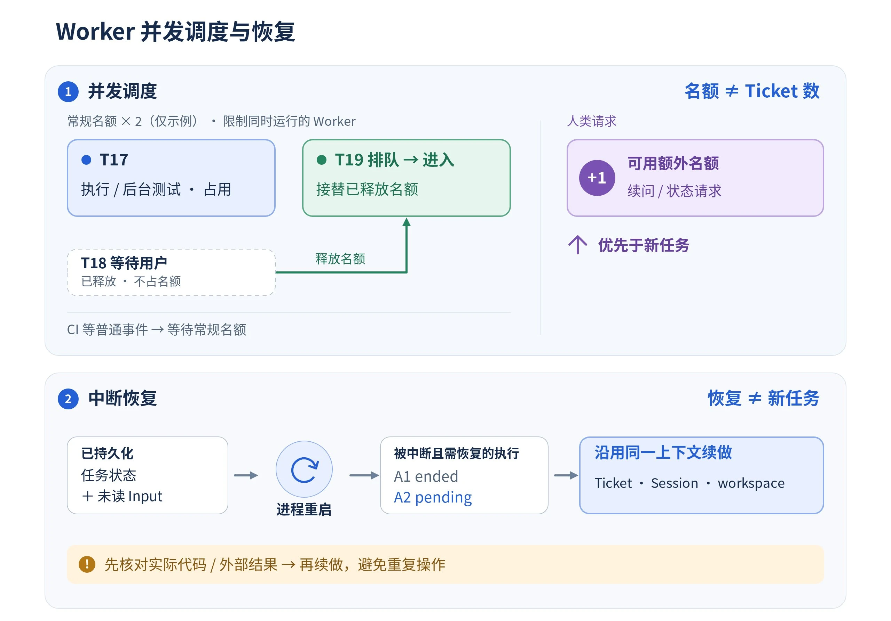
并发调度。任务从准备工作目录、启动到执行期间占用名额；正常执行中的后台作业也继续占用。交接给用户时释放名额，停止子 Agent；供用户验收的服务可以保留，但不占名额，也不因服务退出自动唤醒 Worker。人类续问和状态请求优先于新任务，并可使用额外一个名额；CI 等普通事件等待常规名额。每轮结束后的后台工作窗口为 30 分钟，到期停止 Shell 作业并报告等待，子 Agent 可以继续。
失败处理。启动、投递和反馈先持久化，再执行。消息投递失败会退避重试；暂时的模型或网络故障先自动重试三次，仍失败则保留现场，等待人补充信息或重试。工作目录准备失败不会自动重试，后续的人类消息或显式重试可以再次触发。
中断恢复。进程重启后，Session、workspace、订阅和未读输入仍保留。被中断且需要继续的执行会结束旧 Assignment、创建新 Assignment，在原任务中恢复；等待或受阻的任务通常保持原状，除非之后已有新输入。Worker 先核对代码和外部操作结果，再继续工作，避免重复提交或重复操作。具体规则见执行与恢复。
设计原文还提出独立的 Watchdog，定期检查系统故障和任务是否真正推进，识别进程仍在运行却反复空转的情况。这是系统外的巡检设计，与上述原型内的重试和恢复机制分开理解。
Channel
任务执行后，还需要把结果送回用户，并让用户的回答回到原任务。我们以飞书中的“整理发布说明”为例：Source 将请求转成 Trigger 并归入 Thread，Router 请求接单，Engine 创建 Ticket 和 Assignment、建立订阅，再交给 Worker 执行。
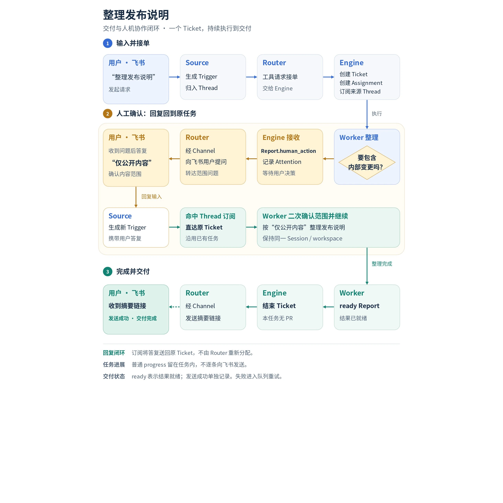
需要决策时。Worker 通过 Report 的 human_action 提出“是否包含内部变更”，Engine 记录 Attention，Router 经 Channel 转达。问题优先发回引发这次提问的人类消息所在会话，否则回到任务起始会话。Router 转交具体问题，不代替用户作技术决定。
用户回答后。“仅公开内容”成为新的 Trigger，按 Thread 订阅直达原 Ticket。Worker 再确认范围，沿用 Session 和 workspace 继续整理，普通答复不会新建 Assignment。若用户提出另一项工作，Worker 交回 Router 重新分流；同一消息仍有其他 Worker 负责时，不重复接单。
结果就绪后。Worker 提交 ready Report，Router 将结果摘要和产物入口发回任务对应的 Channel。这个例子没有 PR，Engine 可结束 Ticket；代码任务则可能先交付 PR 供评审，再等待相关 PR 合并或关闭。结果通知与最终关闭通知分别处理，避免重复发送。
普通进度留在任务内，关键结果和待决策问题才通知用户。结果就绪与发送成功分别记录；发送失败由队列重试，同一 Ticket 在同一会话中的通知保持顺序。用户对自然结束的任务继续追问时，只要原授权仍有效，就可恢复原 Ticket；主动停止的任务需要重新接单。参见交付提示词与渠道发送与任务恢复。
个人感想
Super Agent主要是从产品层面定义了新的Agent模式，去除了单人，多Session的模式，让Agent能适配群聊，issue等更接近人日常工作的场景。并且从技术上抽象出了一些概念，值得被借鉴：
- 两重Agent循环：Router负责任务分发与结果汇报，Worker拥有独立上下文
- 统一多渠道上下文：Source、Thread、Trigger 和 Ticket 为群聊、Bot、Issue 提供共同的消息收集与处理方式。
- 分离 Agent Loop 与运行时：Agent Loop实时保持云端在线与可恢复，运行沙箱可随用户需求自定义在本地，远程临时环境自由变化
但是目前官方主要还是放出一个原型和设计概念，很多概念细节上的设定都需要具体的产品结合实际情况进行细化。同时个人感觉还有以下的一些场景没有考虑
- Worker 协作有限。Worker 互相平级，依赖Router分发多个Trigger来共享信息，缺少直接委派、交接和依赖管理机制。没办法人为配置Worker的协作方式
- 缺少按任务绑定角色的机制。已有全局模型配置、提示词与 Skills 扩展，但接单接口尚未提供按 Ticket 绑定角色、模型、Harness 和权限的完整机制。例如针对：编码、设计或评审定制固定的Agent。
- 长期记忆仍待完善。Router分工没有结合长期记忆，需要能沉淀一些历史规则提高分工准确性
- 编排收益需要验证。Router 模型本质是对thread和Worker建联，没有针对每个Trigger进行评测，整体收益仍应结合人工介入、完成率、延迟和 Token 成本评估。
- 业务规则仍需适配。本文版本面向单个 GitHub 仓库。如果落实到团队，需要结合团队的规则，业务经验重新适配Worker的处理流程。